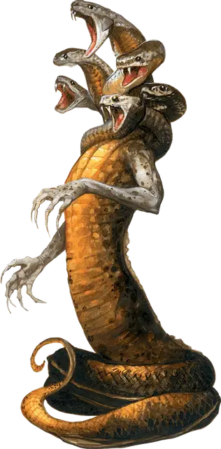

Юань-ти анафема
Yuan-ti Anathema
Огромный Монстр, обычно нейтрально-злой

Класс Доспеха 16 (природный доспех)
Хиты 189 (18к12 + 72)
Скорость 40 футов, плавая 40 футов, лазая 40 футов
| мод | спас | ||
|---|---|---|---|
| СИЛ | 23 | +6 | +6 |
| ЛОВ | 13 | +1 | +1 |
| ТЕЛ | 19 | +4 | +4 |
| мод | спас | ||
|---|---|---|---|
| ИНТ | 19 | +4 | +4 |
| МДР | 17 | +3 | +3 |
| ХАР | 20 | +5 | +5 |
Навыки Восприятие +11, Скрытность +5
Сопротивление урону кислота, огонь, электричество
Иммунитет к урону яд
Иммунитет к состояниям отравление
Чувства слепое зрение 30 футов, тёмное зрение 60 футов, пассивное Восприятие 21
Языки Общий, Бездны, Драконий
Опасность 12 (8400 опыта)
Бонус мастерства +4
Среда обитания Лес, Подземье, Пустыня
Особенности
Сопротивление магии. . Анафема совершает с преимуществом спасброски от заклинаний и других магических эффектов.
Аура офидиофобии. . Любое существо по выбору анафемы, кроме змей и юань-ти, начинающее свой ход в пределах 30 футах от анафемы и могущее слышать или видеть её, должно преуспеть в спасброске Мудрости Сл 17, иначе станет испуганной змеями и юань-ти. Испуганная цель может повторять спасбросок в конце каждого своего хода, оканчивая на себе эффект при успехе. Если спасбросок цели успешен или эффект окончен, то цель получает иммунитет к этой ауре на следующие 24 часа.
Шесть голов. . Анафема совершает с преимуществом спасброски от ослепления, очарования, оглушения, испуга, ошеломления или потери сознания.
Действия
Мультиатака (только в форме анафемы). . Анафема совершает две атаки Когтями и одну атаку Шквалом укусов.
Когти (только в форме анафемы). . Рукопашная атака оружием: +10 к попаданию, досягаемость 10 футов, одна цель. Попадание: 13 (2к6 + 6) рубящего урона.
Шквал укусов (только в форме анафемы). Рукопашная атака оружием: +10 к попаданию, досягаемость 10 футов, одно существо. Попадание: 27 (6к6 + 6) колющего урона плюс 14 (4к6) урона ядом.
Удушение (только в форме змеи). . Рукопашная атака оружием: +10 к попаданию, досягаемость 15 футов, одно существо Большого размера или меньше. Попадание: 16 (3к6 + 6) дробящего урона плюс 7 (2к6) урона кислотой и цель становится схваченной (Сл высвобождения 16). До конца захвата цель опутана и получает 16 (3к6 + 6) дробящего урона плюс 7 (2к6) урона кислотой в начале каждого своего хода. Анафема может душить только одно существо.
Использование заклинаний (только в форме анафемы). Анафема накладывает одно из следующих заклинаний, используя Харизму в качестве базовой характеристики и без использования материальных компонентов (Сл спасброска от заклинаний 17):
• Неограниченно: дружба с животными [animal friendship] (только на змей);
• 3/день каждое: тьма [darkness], опутывание [entangle], ужас [fear], превращение [polymorph], внушение [suggestion].
Бонусные действия
Перевертыш. Анафема может превратиться в Огромного гигантского удава или обратно в свою истинную форму. Ее характеристики одинаковы в любой форме. Любое снаряжение, которое она несет или носит не трансформируется.
Описание
Поиск отродьем юань-ти божественной мощи может привести его к совершению ритуала, который в случае успешного завершения, трансформирует его в высшую форму: юань-ти анафему. Этот ритуал требует жертвоприношения сотен змей и требует, чтобы отродье искупалось в крови своих врагов. Преобразование проходит быстро, но болезненно.
Анафемы считают себя полубогами на пути к большей божественности. Они требуют повиновения от более слабых существ и используют все имеющиеся в их распоряжении ресурсы для войны с соседями, добиваясь пленников, жертвоприношений, славы и богатств, которые, по мнению анафем, необходимы им для достижения истинной божественности.
Анафемы не стареют, что позволяет им преследовать свои цели до конца дней. По-настоящему могущественные могут править несколькими городами юань-ти и подчинять себе целые регионы.